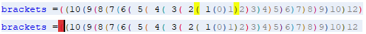

Treatment Table Design editor
The Treatment Table Design editor enables the user to name the treatments and define the rules for how the values entered in each treatment will be processed at runtime.
{kind=link}
The treatment table design editor consists of:
Treatment Table Design Toolbar with options that enable the user to choose which panels are displayed in the editor and what options are displayed in the table and the Resources window.
The Treatment Table Design editor is made up of four different panels:
The Column view displays the columns that will be used in the Treatment Table and the characteristics in the Logical Data Source to which these are mapped.
{kind=link}
The Table View - Column view includes:
- Column Name - where the user can enter a name for a column to be displayed in the Treatment Table.
- Characteristic Mapping - where the user can assign a 'local' characteristic or characteristic from the Logical Data Source, using the Select Characteristic dialog, to which the values processed by the Treatment at runtime will be returned; or the user can create a 'local' characteristic to be used just by the panel. Since 'Local' characteristics will not be returned at runtime, they can be used in calculations such as multipliers.
- Data Type - determined by the characteristic chosen in Characteristic Mapping, or can be defined by the user by selecting from a drop down box if the characteristic assigned is a 'local' characteristic. Possible data types include: String, Integer, Float, Decimal and Date.
- Control Type - the user can choose how the user will enter values in the Treatment Table. Users will be able to select values from a combo box or be able to type in values in a text box.
- Panel Use? - indicates whether this column has been mapped to a control that is being used in the Treatment Panel.
- Value - values are either supplied by the characteristic selected by the user, or if these values do not exist they can be entered into this column. When valid values exist, the user can delete valid values from the list, but not add any additional ones. Values can be populated into this cell using an external file. Values added here are selected by the user when creating a Treatment using the Treatment Panel.
- Tooltip - where the user can access the Tooltip Text dialog to enter a tooltip which will be displayed to assist the user when they hover their mouse over a column in the Treatment Table. Once a tooltip has been assigned the following icon will be displayed in the column.
{kind=link}
The Panel view displays the form controls that will be used in the Treatment Panel highlighting where controls are mapped to columns in the Treatment Table or for panel use only.
{kind=link}
The Table View - Panel view includes:
- Control Name - where the user can enter a unique name for the control to be used in the Treatment Panel. When a control is added to the panel the system will automatically give it a unique name to help identify the different controls within the Treatment Panel and Resources window. It is recommended that they are renamed. If a control is mapped to a column, the name for the control will match that of the column to which it is mapped
- Data Type - determined either by the column selected when the control was added to the Treatment Panel or, if the control is just for Panel use, the data type will be defined by the user using a drop down box. Possible data types include: String, Integer, Float, Decimal and Date.
- Control Type - the name of the control type used in the Panel will be displayed.
- Column Use? - either Y or N will be displayed here indicating whether the control is being used in the Column Table view or whether the control is only being used in the Treatment Panel; e.g., a Text Label.
- Value - values can be entered into this column if the control is not being used in the Column Table view, otherwise the values entered in the Value column in the Column View will be used.
- Tooltip - where the user can access the Tooltip Text dialog to enter a tooltip which will be displayed to assist the user when they hover their mouse over a control in the Treatment Panel. Once a tooltip has been assigned the following icon will be displayed in this column.
A Treatment Table Panel is designed by selecting the required controls from the Palette and arranging them on the Panel Designer. As controls are added, the Add Form Control dialog is launched, enabling specific columns to be selected that will be populated by values when the Treatment Table is used at runtime.
{kind=link}
For the panel itself the designer can:
- use the Show Grid and Snap To Grid tool bar icons to control alignment and spacing of the controls on the Panel.
- use a border to outline the controls on the panel. The border may include some identifying text if required.
- right click on a border and select Send to Back or Bring to Front as required to position the control in front or behind other controls
Once the panel itself is complete the designer can:
- define the tab order for the controls on the form, to help the user to create treatment tables more easily. The tab order is defined by the order of the column defined in the Panel View.
Script is used within the Treatment Table Script Panel to define the rules for how the Treatment Table will work when it is used to create Treatments and how the Treatment will be executed at runtime. Within Treatment Tables there are three types of script that can be defined: Validation, Control and Execution.
{kind=link}
Since each type of script is defined for a particular purpose there are three different tabs in which to write the script:
The Validation Script tab enables the user to define table validation script either by adding the script freehand to the editor or by using the required resources from the Palette and Resources window. The validation script will produce error message(s) to prompt users that they have entered information into the tables incorrectly. The user will not be able create a Table entry unless a correction is made. It will only be possible to write Validation script when those controls that require Validation script applied to them have been added to the Panel Designer.
To learn more about adding controls to the Panel Designer see the topic Add a Control.
{kind=link}
The Treatment Table Design - Validation Script tab editor consists of:
Treatment Table Design editor toolbar with options designed to assist the user in defining a Validation script.
Script editor - area of the editor where script can be typed in freehand or resources can be dragged and dropped into the editor from the Palette and Resources window. The editor also indicates in the right hand bar which line is currently being edited and lines that contain errors. Clicking on a red error bar will take the user straight to the start of the line with the error in it.
Parenthesis matching - to provide visual assistance for parenthesis matching (brackets), matching parenthesis in the script editor will be displayed using the same colour. Those brackets that match will be highlighted in yellow, those that have no match will be highlighted in red. 
{kind=link}
| The Bracket Highlighting feature can be switched off by deselecting the Enabled check box that is found in the Brackets Highlighting tab (accessed from the Miscellaneous area of the Options dialog in the Tools menu). |
The Control Script tab enables the user to specify what is shown or hidden on the panel depending on the selections made by the user.
It will only be possible to write Control script when those controls that require Control script applied to them have been added to the Panel Designer.
{kind=link}
The Treatment Table Design - Control Script tab editor consists of:
Treatment Table Design editor toolbar with options designed to assist the user in defining a Control script.
Script editor - area of the editor where script can be typed in freehand or resources can be dragged and dropped into the editor from the Palette and Resources window. The editor also indicates in the right hand bar which line is currently being edited and lines that contain errors. Clicking on a red error bar will take the user straight to the start of the line with the error in it.
Parenthesis matching - to provide visual assistance for parenthesis matching (brackets), matching parenthesis in the script editor will be displayed using the same colour. Those brackets that match will be highlighted in yellow, those that have no match will be highlighted in red.
| The Bracket Highlighting feature can be switched off by deselecting the Enabled check box that is found in the Brackets Highlighting tab (accessed from the Miscellaneous area of the Options dialog in the Tools menu). |
The Execution Script tab enables the user to define table execution script either by adding the script freehand to the editor or by using the required resources from the Palette and Resources window. Calculations can also be performed; for example one or more characteristics could be used in an equation to generate an output to be returned to the Logical Data Source.
| Logical Data Source characteristic that are mapped to columns cannot be referenced by their name in the execution script, the column name must be used. |
{kind=link}
The Treatment Table Design - Execution Script tab editor consists of:
Treatment Table Design editor toolbar with options designed to assist the user in defining an Execution script.
Script editor - area of the editor where script can be typed in freehand or resources can be dragged and dropped into the editor from the Palette and Resources window. The editor also indicates in the right hand bar which line is currently being edited and lines that contain errors. Clicking on a red error bar will take the user straight to the start of the line with the error in it.
Parenthesis matching - to provide visual assistance for parenthesis matching (brackets), matching parenthesis in the script editor will be displayed using the same colour. Those brackets that match will be highlighted in yellow, those that have no match will be highlighted in red.
| The Bracket Highlighting feature can be switched off by deselecting the Enabled check box that is found in the Brackets Highlighting tab (accessed from the Miscellaneous area of the Options dialog in the Tools menu). |
It will only be possible to write script when those controls that require script applied to them have been added to the Treatment Table Panel. For Execution scripts, Logical Data Source characteristics will need to have been created. To learn more about adding controls to the panel see the topic Add a Control. To create script, Controls and their specific commands are dragged from the Panel View in the Resource bar to the specific tab where they are going to be used. To find out more about creating script see the topic Creating Treatment Table script.
The Treatment Table Script editor displays characteristic names, operators, command verbs etc. in different colours. Line wrapping can be enabled for the scripting editor from within the Tools menu.
The script syntax must be valid before any testing can be carried out.
Properties Window
The Properties window enables the user to define specific properties for each column defined for the Treatment Table. The Properties that are configurable are dependent on the type of control, whether the characteristic is string or numeric and whether the control is mapped to a logical data source characteristic. See the topic Control Properties for more information on the each property that can be configured for each control.